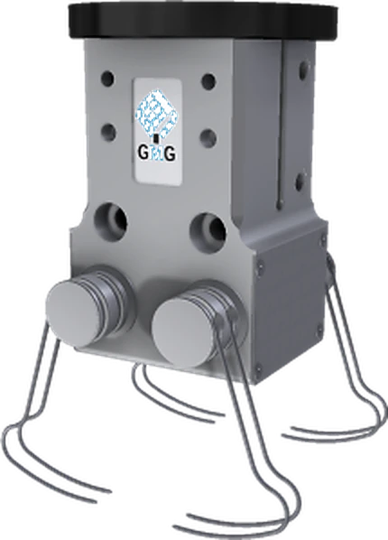
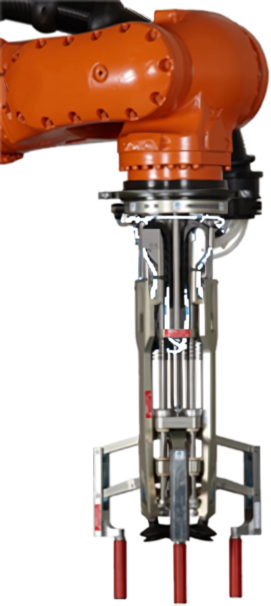
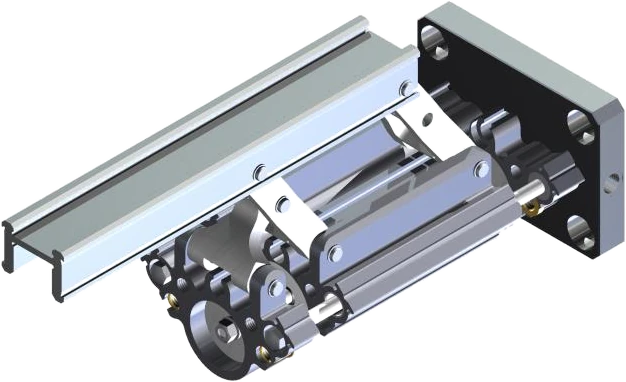
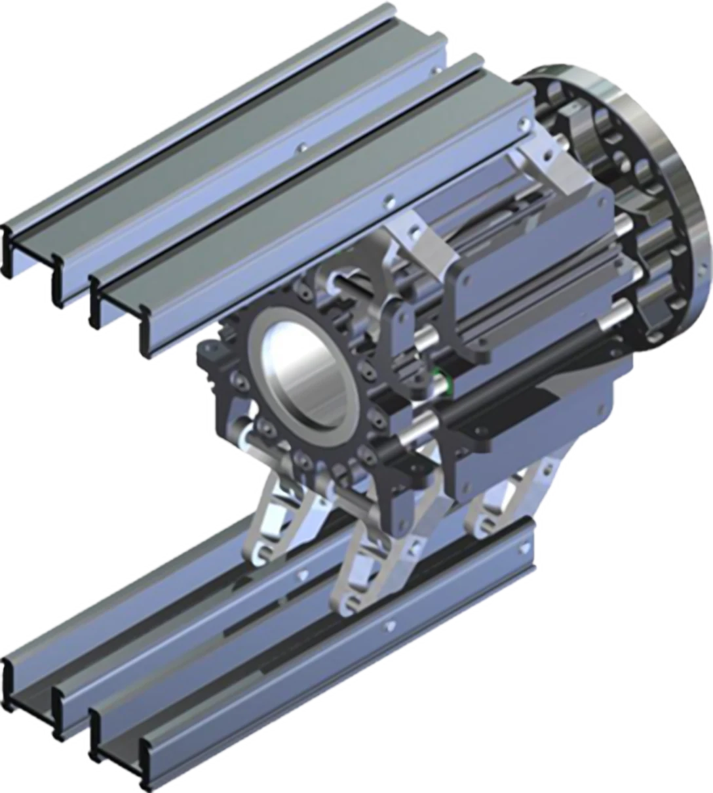
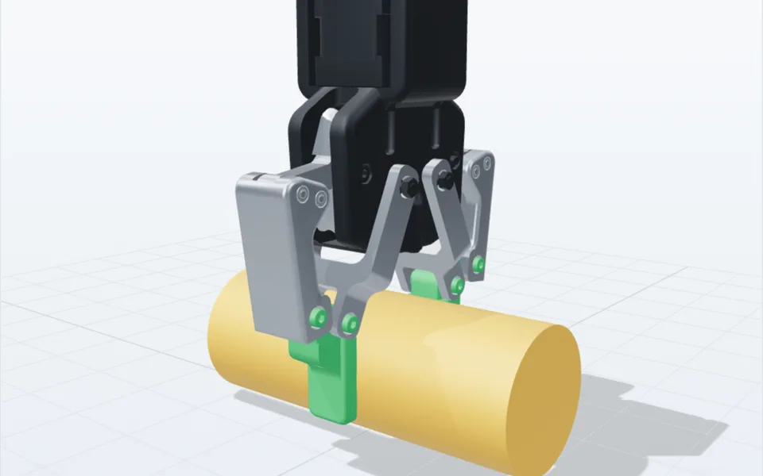
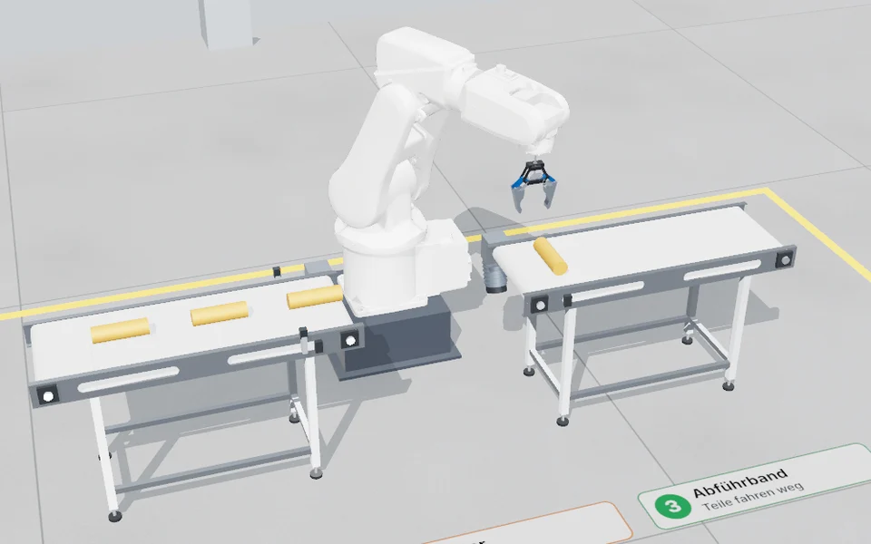

Über 25 Jahre Erfahrung · Made in Soest
GMG entwickelt die Greifer für die nächste Roboter-Generation.
Wir entwickeln, fertigen und vertreiben ausschließlich Greifer: technische Hände für Roboter, Maschinen und Anlagen. Modular aufgebaut, und wo nichts von der Stange passt, als Sonderanfertigung.
über 25 Jahre
Erfahrung, gegründet 1992 in Soest, international patentiert
9 / 20+
Produktfamilien / Baureihen
bis 44 kN
Greifkraft (Hohlgreifer C16, 6 bar)
bis 850 Nm
pro Achse und Finger (Schwerlastgreifer)
bis 10 Mio.
Hübe wartungsfrei
entwickelt und gefertigt in Soest
Greifer nach Prozess
Was soll Ihr Greifer tun?
Wählen Sie nach Ihrer Aufgabe, nicht nach Typenbezeichnung. Zu jedem Prozess zeigen wir die passenden Baureihen.
Reifen und Räder greifen
Reifen und Räder sicher aufnehmen und umsetzen, in der Reifenproduktion, im Reifenlager und in der Automobilfertigung.
Passende Greifer:R106

Teig, Fleisch und Backwaren greifen
Weiche und unregelmäßige Lebensmittel mit gefederten Nadeln aufnehmen, die ins Produkt einstechen. Abgedichtet und abwaschbar, mit Abstreifblech für Backwaren.

Kugellager und Ringe von innen greifen
Runde Teile mit Bohrung wie Kugellager, Ringe und Buchsen von innen greifen, mit langen, schlanken Fingern auch tief aus Kisten und Kartons. Ein Vakuumsauger legt dabei gleich die Zwischenlagen zwischen die Schichten.
Passende Greifer:I105
Teile in Staub und Schmutz greifen
Komplett abgedichtete Winkelgreifer für raue Umgebungen. Die Finger öffnen um 180° und geben den Platz über dem Teil ganz frei, so fährt der Greifer direkt an das Teil heran.
Kleine und große Teile mit einem Greifer
Riesiger Hub: Die Finger fahren parallel zu und schwenken beim Öffnen über 100° zur Seite. Ein Greifer fasst so sehr unterschiedlich große Teile, ohne Umrüsten.

Werkstücke spannen, eigene Greifer bauen
Das Einzelfinger-Modul als Maschinenelement: Werkstücke in Vorrichtungen spannen oder eigene Greifer mit beliebiger Greifform aufbauen.
Passende Greifer:E03
Ihr Prozess ist nicht dabei?
Sonderanfertigungen sind möglich. Schicken Sie uns Ihr Teil, eine Zeichnung oder ein Video Ihrer Anlage. Wir entwickeln den passenden Greifer.
Jetzt anfragen
Kunden
Diese Unternehmen setzen auf GMG
Von Maschinenbauern und Integratoren bis zu Herstellern aus der Lebensmittel-, Automobil- und Baustoffindustrie.
Logo folgt
Logo folgt
Logo folgt
Logo folgt
Logo folgt
Logo folgt
Logo folgt
Logo folgt
Hier stehen bald die Logos der Unternehmen, die wir beliefern.
Hier sind wir stark
Branchen und Prozesse, in denen sich GMG-Greifer bewährt haben
Lebensmittelindustrie
Abgedichtete, abwaschbare Greifer aus Aluminium und nichtrostendem Stahl für Teig, Fleisch und Backwaren.
Automotive
Reifen, Räder und schwere Bauteile: robuste Greifer für Fertigung, Logistik und Reifenlager.
Sackgreifer
Säcke sicher greifen, zum Beispiel Zementsäcke und andere Säcke mit Schüttgut, beim Palettieren und Depalettieren.
Verpackungsprozesse
Teile in Verpackungen einsetzen und aus Kisten und Kartons entnehmen, schnell umsetzen, Verpackungsanlagen beschicken.
Sonderanfertigungen
Kein passender Greifer dabei? Dann bauen wir ihn.
Über 25 Jahre Erfahrung im Greiferbau stecken in jeder Sonderanfertigung. Aus unserem modularen Baukasten entsteht der Greifer für Ihre Aufgabe, entwickelt und gefertigt in Soest.
- Ihre Aufgabe: Teil, Zeichnung, STEP-Datei oder ein Video Ihrer Anlage.
- Unser Konzept: Greifprinzip, Finger und Backen passend zu Teil und Prozess.
- Ihr Greifer: gefertigt in Soest, auf Wunsch mit Signalgebern und Objektsicherung.

Neu: Greifer in 3D testen
Ihr Teil, unser Greifer, Ihre Anlage
Laden Sie Ihr Teil, legen Sie fest, wo der Greifer zufasst, und sehen Sie ihn danach in einer kleinen Anlage arbeiten. Direkt im Browser, ohne Anmeldung.

1
Greifer-Konfigurator
STEP- oder STL-Datei laden oder Grundform wählen. Dann Greifer auswählen und festlegen, wo er greift: von außen oder von innen, in welcher Höhe und an welcher Stelle. Ihre Datei bleibt auf Ihrem Rechner.
Konfigurator öffnen
2
Anlagen-Simulator
Ihr Teil und Ihr Greifer laufen in einer kleinen Anlage: Förderband, Palette oder Presse, dazu Roboter, Delta-Roboter oder Linearportal. Geschwindigkeit, Hubhöhe und Drehung stellen Sie selbst ein.
Simulator ansehen
Das Prinzip
Was modular bei GMG bedeutet
Ein Baukasten, aus dem für jede Handhabungsaufgabe der passende Greifer entsteht. Wirtschaftlich anpassbar, wenn sich die Aufgabe ändert.
01
Geometrische Form
Hexagonal, rechteckig, quadratisch oder als Einzelmodul.
02
Anzahl der Finger
Zwei bis sechs Finger, frei positionierbar.
03
Bewegungsform
Parallel, schwenkend oder kombiniert, für jeden Finger einzeln.
04
Fingerlänge
Variabel, für jeden Finger einzeln wählbar.
Warum GMG
Robust, wartungsfrei und patentiert
Exakte Linearbewegungen der Greiffinger, realisiert ausschließlich mit einfachen Drehgelenken. Ohne gehärtete und geschmierte Führungsnuten, die bei langen Fingern zum Klemmen neigen.
- Erfinder der modularen Greifersysteme, dazu der Parallel-Winkelgreifer und der Schwerlastgreifer. International patentiert und mehrfach ausgezeichnet.
- Wartungs- und schmierungsfreie Gleitlager, viele Baureihen wartungsfrei bis 10 Mio. Hübe.
- Aluminiumlegierungen und nichtrostender Stahl: abwaschbar, rostfrei, langlebig und 100 % wiederverwertbar.
- Kundenspezifische Greifer: Aus dem engen Kontakt mit Ihnen entstehen neue Lösungen.
Schwerlastgreifer S310 im Einsatz
Langarmgreifer I105
Die Videos werden erst nach Klick von YouTube geladen.
Ihre Handhabungsaufgabe. Unsere Greiferlösung.
Rufen Sie uns an oder schicken Sie uns Ihre Anfrage, gern mit Zeichnung oder Skizze. Häufig entsteht daraus ein kundenspezifischer Greifer.
Foto
folgt
folgt
Ihr Ansprechpartner
Name und Funktion folgen
Name und Funktion folgen